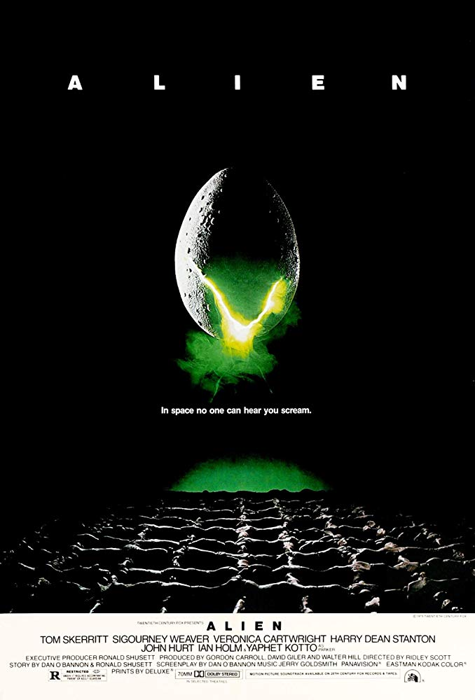
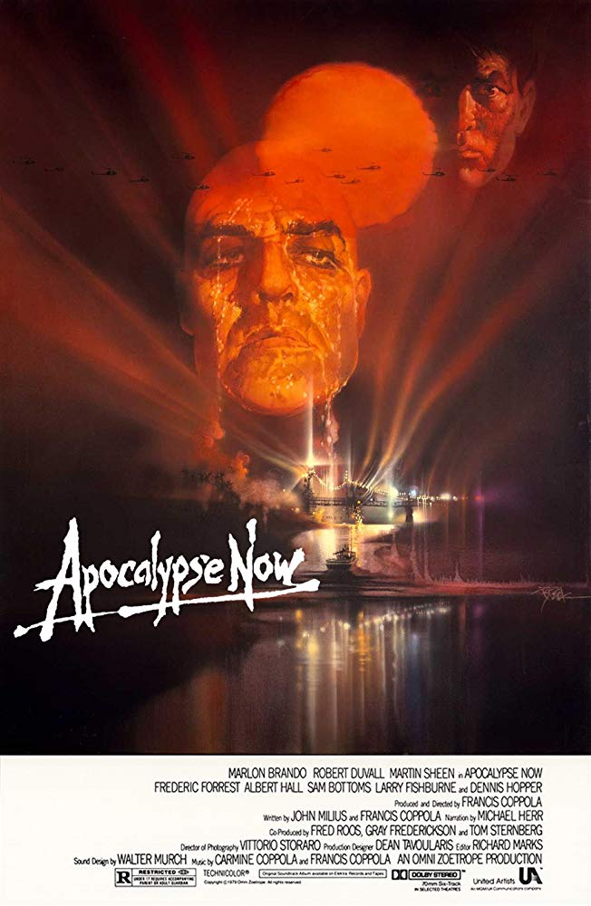

Alex Vassiliou
legit programmer
eat, sleep, code, repeat
movie recommendations:

|
Bladerunner (1982)In a cyberpunk vision of the future, man has developed the technology to create replicants - artificially created humanoids with short, fixed lifespans - which are illegal on Earth but are used in the off-world colonies. In Los Angeles, 2019, Deckard is a Blade Runner, a cop who specializes in terminating replicants. He is forced to come out of retirement when four replicants escape from an off-world colony and come to Earth. |
|  |
|
|  |
|